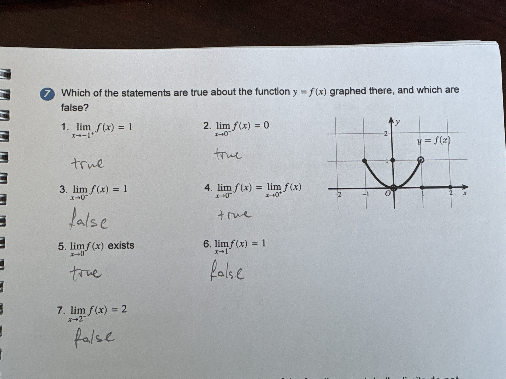

Calculus Limits & Continuity

7 Which of the statements are true about the function $y = f(x)$ graphed there, and which are false? 1. $\lim_{x \to -1^+} f(x) = 1$ 2. $\lim_{x \to 0^-} f(x) = 0$ 3. $\lim_{x \to 0^-} f(x) = 1$ 4. $\lim_{x \to 0^-} f(x) = \lim_{x \to 0^+} f(x)$ 5. $\lim_{x \to 0} f(x)$ exists 6. $\lim_{x \to 1} f(x) = 1$ 7. $\lim_{x \to 2^-} f(x) = 2$
1. true, 2. true, 3. false, 4. true, 5. false, 6. false, 7. false
1. True, 2. True, 3. False, 4. True, 5. True, 6. False, 7. False
Let's check each statement by looking at the graph: 1. As we approach $x = -1$ from the right side, the curve goes to $y = 1$. This is True. 2. As we approach $x = 0$ from the left side, the curve goes to the origin $(0, 0)$. So the limit is 0. This is True. 3. Since we just found the limit from the left is 0, it cannot be 1. This is False. 4. As we approach $x = 0$ from the right, the curve also goes to the origin. Since both side limits are 0, they are equal. This is True. 5. Because the left-hand and right-hand limits at $x = 0$ are the same, the two-sided limit exists (it is 0). This is True. The student incorrectly labeled this as 'false'. 6. As $x$ approaches 1 from the left, $y$ approaches $-1$. As $x$ approaches 1 from the right, $y$ approaches 1. Since these don't match, the limit doesn't exist, so saying it is 1 is False. 7. For $x > 1$, the function is a horizontal line at $y = 1$. This means at $x = 2$, the limit from the left is 1, not 2. This is False.